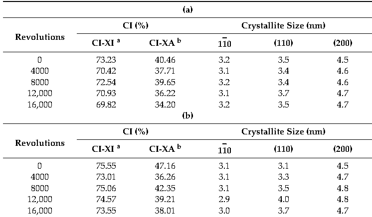
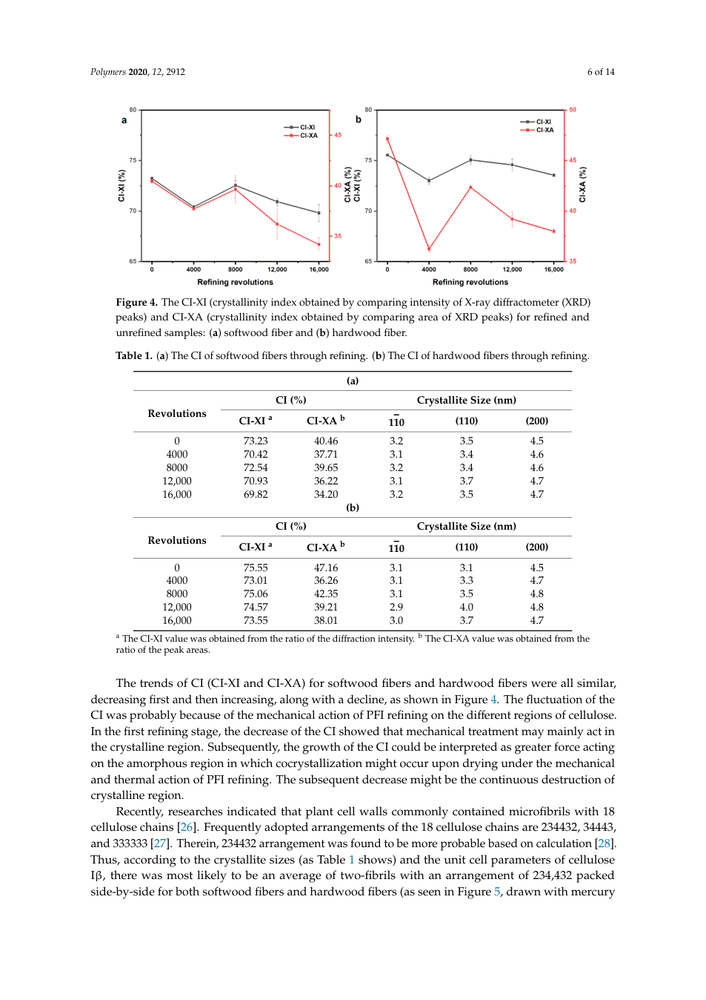
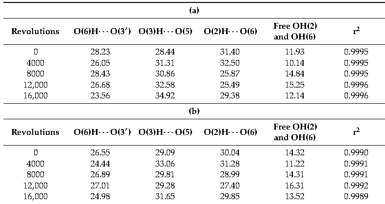
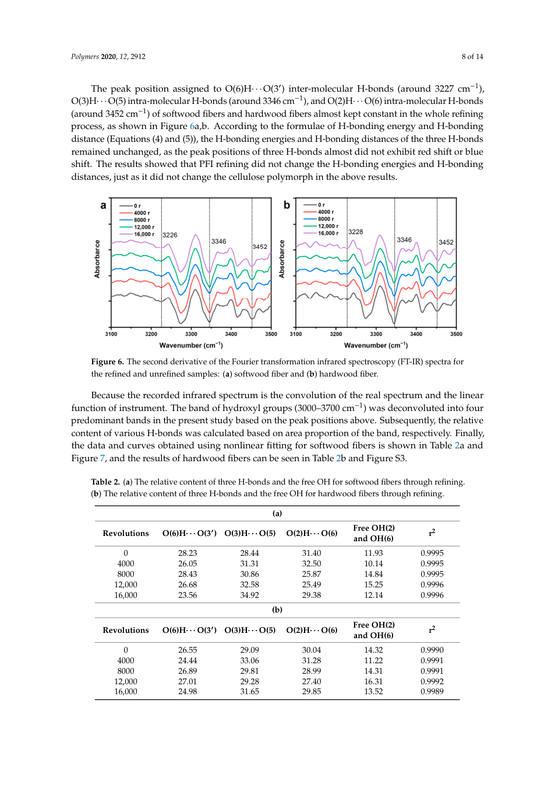
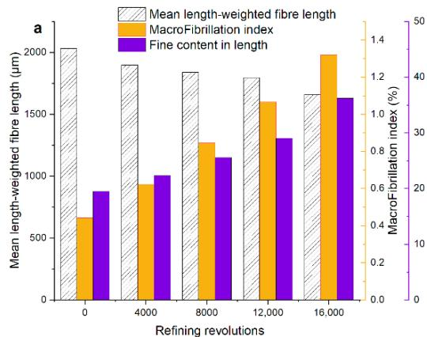
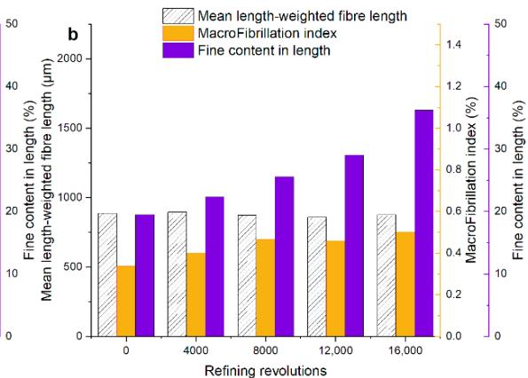

同一篇论文：MinerU与PyMuPDF解析对照
14页PFI论文 · 原PDF SHA256 0fcf2a50cfa02d21… · 官方精准API实测
表格结构与来源坐标有明显新增价值，正文与标题也存在实际错误。本次尚未切换RAG索引。161个MinerU结构块与44/81个检索块不是同一概念，不能据数量判断质量。
原固定切块：44当前规则切块：81MinerU原始结构块：161表格数据行数值：120/120一致
请求vlm；实际云端结果报告hybrid / 3.4.4。数值检查含转数列，不覆盖表头、公式和整篇语义。
MinerU原始Markdown · 原始结构JSON · 按页JSON V2 · PyMuPDF原始文字 · 原44块 · 当前81块
解析与切块分别做什么
原项目实际实现
PyMuPDF: page.get_text("text", sort=True)
→ 按页获得文字
→ PageChunker(1200, 200)
→ 44个检索块
当前优化：重建页面文本
→ 标点/标题规则 + 单页表格分组
→ 81个检索块
本次MinerU实际结果
官方精准解析API
→ 文本/标题、表格、图表、图片、公式等结构块
→ Markdown + JSON + 图片
→ 161个原始结构块
尚需我们实现：
标题清理与层级校验 → 章节树
按段落、表格等组织检索块 → 长度控制
保存页码/坐标 → 精准引用
两张表：原文、切块与MinerU行列结构
表1 · PDF第6页
旧固定切块涉及1块；其中完整容纳表格的块数：1。当前规则版本为1个表格块。MinerU数据行数值核对：60/60。
上传PDF的表格区域
按返回坐标直接裁剪原PDF，未改写数值。

查看原PDF整页

MinerU实际HTML表格
Table 1. (a) The CI of softwood fibers through refining. (b) The CI of hardwood fibers through refining. <sup>a</sup> The CI-XI value was obtained from the ratio of the difraction intensity. <sup>b</sup> The CI-XA value was obtained from the ratio of the peak areas.
JSON来源定位：page_idx=5（对应第6页），bbox=[184, 370, 811, 629]。
当前规则版本保留的表格纯文本
Table 1. (a) The CI of softwood fibers through refining. (b) The CI of hardwood fibers through refining.
(a)
CI (%) Crystallite Size (nm)
Revolutions a b CI-XI CI-XA 110 (110) (200)
0 73.23 40.46 3.2 3.5 4.5
4000 70.42 37.71 3.1 3.4 4.6
8000 72.54 39.65 3.2 3.4 4.6
12,000 70.93 36.22 3.1 3.7 4.7
16,000 69.82 34.20 3.2 3.5 4.7
(b)
CI (%) Crystallite Size (nm)
Revolutions a b CI-XI CI-XA 110 (110) (200)
0 75.55 47.16 3.1 3.1 4.5
4000 73.01 36.26 3.1 3.3 4.7
8000 75.06 42.35 3.1 3.5 4.8
12,000 74.57 39.21 2.9 4.0 4.8
16,000 73.55 38.01 3.0 3.7 4.7
a The CI-XI value was obtained from the ratio of the diffraction intensity. b The CI-XA value was obtained from the
ratio of the peak areas.
原固定长度块：查看表格是否在边界被切断
chunk_index=17
Polymers 2020, 12, 2912 6 of 14
Figure 4. The CI-XI (crystallinity index obtained by comparing intensity of X-ray diffractometer (XRD)
peaks) and CI-XA (crystallinity index obtained by comparing area of XRD peaks) for refined and
unrefined samples: (a) softwood fiber and (b) hardwood fiber.
Table 1. (a) The CI of softwood fibers through refining. (b) The CI of hardwood fibers through refining.
(a)
CI (%) Crystallite Size (nm)
Revolutions a b CI-XI CI-XA 110 (110) (200)
0 73.23 40.46 3.2 3.5 4.5
4000 70.42 37.71 3.1 3.4 4.6
8000 72.54 39.65 3.2 3.4 4.6
12,000 70.93 36.22 3.1 3.7 4.7
16,000 69.82 34.20 3.2 3.5 4.7
(b)
CI (%) Crystallite Size (nm)
Revolutions a b CI-XI CI-XA 110 (110) (200)
0 75.55 47.16 3.1 3.1 4.5
4000 73.01 36.26 3.1 3.3 4.7
8000 75.06 42.35 3.1 3.5 4.8
12,000 74.57 39.21 2.9 4.0 4.8
16,000 73.55 38.01 3.0 3.7 4.7
a The CI-XI value was obtained from the ratio of the diffraction intensity. b The CI-XA value was obtained from the
ratio of the peak areas.
The trends of CI (CI-XI and CI-XA) for softwood fibers and hardwood fibers were all similar,
decreasing first and then increasing, along with a decline, as shown in Figure 4. The fluctuation of the
CI was probably because of the m
表2 · PDF第8页
旧固定切块涉及2块；其中完整容纳表格的块数：0。当前规则版本为1个表格块。MinerU数据行数值核对：60/60。
上传PDF的表格区域
按返回坐标直接裁剪原PDF，未改写数值。

查看原PDF整页

MinerU实际HTML表格
Table 2. (a) The relative content of three H-bonds and the free OH for softwood fibers through refining. (b) The relative content of three H-bonds and the free OH for hardwood fibers through refining.
JSON来源定位：page_idx=7（对应第8页），bbox=[166, 640, 830, 889]。
当前规则版本保留的表格纯文本
Table 2. (a) The relative content of three H-bonds and the free OH for softwood fibers through refining.
(b) The relative content of three H-bonds and the free OH for hardwood fibers through refining.
(a)
Free OH(2) Revolutions O(6)H· · · O(3′) O(3)H· · · O(5) O(2)H· · · O(6) r2
and OH(6)
0 28.23 28.44 31.40 11.93 0.9995
4000 26.05 31.31 32.50 10.14 0.9995
8000 28.43 30.86 25.87 14.84 0.9995
12,000 26.68 32.58 25.49 15.25 0.9996
16,000 23.56 34.92 29.38 12.14 0.9996
(b)
Free OH(2) Revolutions O(6)H· · · O(3′) O(3)H· · · O(5) O(2)H· · · O(6) r2
and OH(6)
0 26.55 29.09 30.04 14.32 0.9990
4000 24.44 33.06 31.28 11.22 0.9991
8000 26.89 29.81 28.99 14.31 0.9991
12,000 27.01 29.28 27.40 16.31 0.9992
16,000 24.98 31.65 29.85 13.52 0.9989
原固定长度块：查看表格是否在边界被切断
chunk_index=24
frared spectrum is the convolution of the real spectrum and the linear
function of instrument. The band of hydroxyl groups (3000–3700 cm−1) was deconvoluted into four
predominant bands in the present study based on the peak positions above. Subsequently, the relative
content of various H-bonds was calculated based on area proportion of the band, respectively. Finally,
the data and curves obtained using nonlinear fitting for softwood fibers is shown in Table 2a and
Figure 7, and the results of hardwood fibers can be seen in Table 2b and Figure S3.
Table 2. (a) The relative content of three H-bonds and the free OH for softwood fibers through refining.
(b) The relative content of three H-bonds and the free OH for hardwood fibers through refining.
(a)
Free OH(2) Revolutions O(6)H· · · O(3′) O(3)H· · · O(5) O(2)H· · · O(6) r2
and OH(6)
0 28.23 28.44 31.40 11.93 0.9995
4000 26.05 31.31 32.50 10.14 0.9995
8000 28.43 30.86 25.87 14.84 0.9995
12,000 26.68 32.58 25.49 15.25 0.9996
16,000 23.56 34.92 29.38 12.14 0.9996
(b)
Free OH(2) Revolutions O(6)H· · · O(3′) O(3)H· · · O(5) O(2)H· · · O(6) r2
and OH(6)
0 26.55 29.09 30.04 14.32 0.9990
4000 24.44 33.06 31.28 11.22 0.9991
8000 26.89 29.81 28.99 14
chunk_index=25
.38 12.14 0.9996
(b)
Free OH(2) Revolutions O(6)H· · · O(3′) O(3)H· · · O(5) O(2)H· · · O(6) r2
and OH(6)
0 26.55 29.09 30.04 14.32 0.9990
4000 24.44 33.06 31.28 11.22 0.9991
8000 26.89 29.81 28.99 14.31 0.9991
12,000 27.01 29.28 27.40 16.31 0.9992
16,000 24.98 31.65 29.85 13.52 0.9989
标题：识别出来不等于层级已经正确
16个标题候选，文档题名为level 1，其余15个全是level 2。章与小节仍需根据编号和版面校验；“4.1 nm”是图片标注，不是章节标题。
正文：原样对比第5页
“The value of the CI-XI”在原PyMuPDF结果出现1次，在本次MinerU对应页的正文出现3次。右侧保留原输出中的HTML标记和重复，不做人工修正。
PyMuPDF
Polymers 2020, 12, 2912 5 of 14
Figure 2. The beating degree and Water Retention Value (WRV) for the unrefined and refined samples:
(a) softwood fibers and (b) hardwood fibers.
In Figure 3, the tensile index, zero-span tensile index, and wet-web strength represented as a
function of the refining revolutions. The increment of tensile strength is mainly caused by the increasing
fibrillation and fines during PFI refining, as mentioned above. The wet–web strength of softwood
fiber had a more significant increase when compared to that of hardwood fiber. It is for that fiber
length plays an essential role in wet–web strength. The zero-span tensile index was usually used in
characterizing the tensile strength of fibers. The results of the zero-span tensile index showed that
PFI refining did not reduce fiber strength, which is consistent with the report of Kouko et al. [24].
The above results showed that PFI refining improved the extent of fibrillation (especially the internal
fibrillation), the swelling of fibers, and the tensile strength of sheets without a decrease of the tensile
strength of fibers.
Figure 3. The rheological analysis of wet sheets, the tensile strength of dry sheets, and the fiber strength
for unrefined and refined samples: (a) softwood fibers and (b) hardwood fibers.
3.2. Effect of PFI Refining on Crystalline Index and Crystallite Size
The cellulose polymorph of these two fibers had no change during PFI treatment, which illustrates
that the PFI refining is a relatively mild mechanical treatment, as the results of XRD in Online Resource
(Figures S1 and S2) show. In general, the CI-XI and the CI-XA of softwood fibers showed a reduction
of 4.66% and 15.47%, respectively, and those of hardwood fibers decreased by 2.65% and 19.4%,
respectively, as can be seen in Figure 4 and Table 1. The value of the CI-XI was remarkably higher than
the CI-XA, which might be caused by the over-fitting of amorphous contribution in the analysis of
CI-XA. However, the CI-XI and the CI-XA were correlated significantly for both softwood fibers and
hardwood fibers, with a correlation coefficient of 0.919 (p < 0.05) for softwood fibers and 0.925 (p < 0.05)
for hardwood fibers, respectively, which is consistent with the report of Ahvenainen et al. [25].
MinerU
<sub>In Figure 3, the tensile index, zero-span tensile index, and wet-web strength represented as a</sub><sup>In</sup> <sup>Figure</sup> <sup>3,</sup> <sup>the</sup> <sup>tensile</sup> <sup>index,</sup> <sup>zero-span</sup> <sup>tensile</sup> <sup>index,</sup> <sup>and</sup> <sup>wet-web</sup> <sup>strength</sup> <sup>represented</sup> <sup>as</sup> <sup>a</sup> <sup>In</sup> <sup>Figure</sup> <sup>3,</sup> <sup>the</sup> <sup>tensile</sup> <sup>index,</sup> <sup>zero-span</sup> <sup>tensile</sup> <sup>index,</sup> <sup>and</sup> <sup>wet-web</sup> <sup>strength</sup> <sup>represented</sup> <sup>as</sup> <sup>a</sup>function of the refining revolutions. The increment of tensile strength is mainly caused by the increasing function of the refining revolutions. The increment of tensile strength is mainly caused by the<sub>fibrillation and fines during PFI refining, as mentioned above. The wet–web strength of softwood</sub><sup>increasing</sup> <sup>fibrillation</sup> <sup>and</sup> <sup>fines</sup> <sup>during</sup> <sup>PFI</sup> <sup>refining,</sup> <sup>as</sup> <sup>mentioned</sup> <sup>above.</sup> <sup>The</sup> <sup>wet–web</sup> <sup>strength</sup> <sup>of</sup> increasing fibrillation and fines during PFI refining, as mentioned above. The wet–web strength of<sub>fiber</sub> <sub>had</sub> <sub>a</sub> <sub>more</sub> <sub>significant</sub> <sub>increase</sub> <sub>when</sub> <sub>compared</sub> <sub>to</sub> <sub>that</sub> <sub>of</sub> <sub>hardwood</sub> <sub>fiber.</sub> <sub>It</sub> <sub>is</sub> <sub>for</sub> <sub>that</sub> <sub>fiber</sub> <sup>softwood</sup> <sup>fiber</sup> <sup>had</sup> <sup>a</sup> <sup>more</sup> <sup>significant</sup> <sup>increase</sup> <sup>when</sup> <sup>compared</sup> <sup>to</sup> <sup>that</sup> <sup>of</sup> <sup>hardwood</sup> <sup>fiber.</sup> <sup>It</sup> <sup>is</sup> <sup>for</sup>length plays an essential role in wet–web strength. The zero-span tensile index was usually used in <sup>that</sup> <sup>fiber</sup> <sup>length</sup> <sup>plays</sup> <sup>an</sup> <sup>essential</sup> <sup>role</sup> <sup>in</sup> <sup>wet–web</sup> <sup>strength.</sup> <sup>The</sup> <sup>zero-span</sup> <sup>tensile</sup> <sup>index</sup> <sup>was</sup> <sup>usually</sup><sub>characterizing the tensile strength of fibers. The results of the zero-span tensile index showed that</sub> used in characterizing the tensile strength of fibers. The results of the zero-span tensile index showed <sub>PFI</sub> <sub>refining</sub> <sub>did</sub> <sub>not</sub> <sub>reduce</sub> <sub>fiber</sub> <sub>strength,</sub> <sub>which</sub> <sub>is</sub> <sub>consistent</sub> <sub>with</sub> <sub>the</sub> <sub>report</sub> <sub>of</sub> <sub>Kouko</sub> <sub>et</sub> <sub>al.</sub> <sub>[24].</sub> that PFI refining did not reduce fiber strength, which is consistent with the report of Kouko et al. [24].<sub>The</sub> <sub>above</sub> <sub>results</sub> <sub>showed</sub> <sub>that</sub> <sub>PFI</sub> <sub>refining</sub> <sub>improved</sub> <sub>the</sub> <sub>extent</sub> <sub>of</sub> <sub>fibrillation</sub> <sub>(especially</sub> <sub>the</sub> <sub>internal</sub><sup>The</sup> <sup>above</sup> <sup>results</sup> <sup>showed</sup> <sup>that</sup> <sup>PFI</sup> <sup>refining</sup> <sup>improved</sup> <sup>the</sup> <sup>extent</sup> <sup>of</sup> <sup>fibrillation</sup> <sup>(especially</sup> <sup>the</sup> <sup>internal</sup> The above results showed that PFI refining improved the extent of fibrillation (especially the internal<sub>fibrillation), the swelling of fibers, and the tensile strength of sheets without a decrease of the tensile</sub><sup>fibrillation),</sup> <sup>the</sup> <sup>swelling</sup> <sup>of</sup> <sup>fibers,</sup> <sup>and</sup> <sup>the</sup> <sup>tensile</sup> <sup>strength</sup> <sup>of</sup> <sup>sheets</sup> <sup>without</sup> <sup>a</sup> <sup>decrease</sup> <sup>of</sup> <sup>the</sup> <sup>tensile</sup> fibrillation), the s<sub>strength of fibers.</sub><sup>strength</sup> <sup>of</sup> <sup>fibers.</sup>
strength for unrefined and refined samples: (a) softwood fibers3.2. Efect of PFI Refining on Crystalline Index and Crystallite Size
The cellulose polymorph of these two fibers had no change during PFI treatment, which illustrates <sup>The</sup> <sup>cellulose</sup> <sup>polymorph</sup> <sup>of</sup> <sup>these</sup> <sup>two</sup> <sup>fibers</sup> <sup>had</sup> <sup>no</sup> <sup>change</sup> <sup>during</sup> <sup>PFI</sup> <sup>treatment,</sup> <sup>which</sup>that the PFI refining is a relatively mild mechanical treatment, as the results of XRD in Online Resource The cellulose polymorph of these two fibers had no change during PFI treatment, which<sup>illustrates</sup> <sup>that</sup> <sup>the</sup> <sup>PFI</sup> <sup>refining</sup> <sup>is</sup> <sup>a</sup> <sup>relatively</sup> <sup>mild</sup> <sup>mechanical</sup> <sup>treatment,</sup> <sup>as</sup> <sup>the</sup> <sup>results</sup> <sup>of</sup> <sup>XRD</sup> <sup>in</sup>(Figures S1 and S2) show. In general, the CI-XI and the CI-XA of softwood fibers showed a reduction illustrates that the PFI refining is a relatively mild mechanical treatment, as the results of XRD in <sup>Online</sup> <sup>Resource</sup> <sup>(Figures</sup> <sup>S1</sup> <sup>and</sup> <sup>S2)</sup> <sup>show.</sup> <sup>In</sup> <sup>general,</sup> <sup>the</sup> <sup>CI-XI</sup> <sup>and</sup> <sup>the</sup> <sup>CI-XA</sup> <sup>of</sup> <sup>softwood</sup> <sup>fibers</sup> of 4.66% and 15.47%, respectively, and those of hardwood fibers decreased by 2.65% and 19.4%, Online Resource (Figures S1 and S2) show. In general, the CI-XI and the CI-XA of softwood fibers<sup>showed</sup> <sup>a</sup> <sup>reduction</sup> <sup>of</sup> <sup>4.66%</sup> <sup>and</sup> <sup>15.47%,</sup> <sup>respectively,</sup> <sup>and</sup> <sup>those</sup> <sup>of</sup> <sup>hardwood</sup> <sup>fibers</sup> <sup>decreased</sup> <sup>by</sup>respectively, as can be seen in Figure 4 and Table 1. The value of the CI-XI was remarkably higher than showed a reduction of 4.66% and 15.47%, respectively, and those of hardwood fibers decreased by<sup>2.65%</sup> <sup>and</sup> <sup>19.4%,</sup> <sup>respectively,</sup> <sup>as</sup> <sup>can</sup> <sup>be</sup> <sup>seen</sup> <sup>in</sup> <sup>Figure</sup> <sup>4</sup> <sup>and</sup> <sup>Table</sup> <sup>1.</sup> <sup>The</sup> <sup>value</sup> <sup>of</sup> <sup>the</sup> <sup>CI-XI</sup> <sup>was</sup>the CI-XA, which might be caused by the over-fitting of amorphous contribution in the analysis of 2.65% and 19.4%, respectively, as can be seen in Figure 4 and Table 1. The value of the CI-XI was<sup>remarkably</sup> <sup>higher</sup> <sup>than</sup> <sup>the</sup> <sup>CI-XA,</sup> <sup>which</sup> <sup>might</sup> <sup>be</sup> <sup>caused</sup> <sup>by</sup> <sup>the</sup> <sup>over-fitting</sup> <sup>of</sup> <sup>amorphous</sup>CI-XA. However, the CI-XI and the CI-XA were correlated significantly for both softwood fibers and remarkably higher than the CI-XA, which might be caused by the over-fitting of amorphous<sup>contribution</sup> <sup>in</sup> <sup>the</sup> <sup>analysis</sup> <sup>of</sup> <sup>CI-XA.</sup> <sup>However,</sup> <sup>the</sup> <sup>CI-XI</sup> <sup>and</sup> <sup>the</sup> <sup>CI-XA</sup> <sup>were</sup> <sup>correlated</sup> <sup>significantly</sup>hardwood fibers, with a correlation coeficient of 0.919 (p < 0.05) for softwood fibers and 0.925 (p < 0.05) contribution in the analysis of CI-XA. However, the CI-XI and the CI-XA were correlated signif<sup>for</sup> <sup>both</sup> <sup>softwood</sup> <sup>fibers</sup> <sup>and</sup> <sup>hardwood</sup> <sup>fibers,</sup> <sup>with</sup> <sup>a</sup> <sup>correlation</sup> <sup>coefficient</sup> <sup>of</sup> <sup>0.919</sup> <sup>(p</sup> <sup><</sup> <sup>0.</sup>for hardwood fibers, respectively, which is consistent with the report of Ahvenainen et al. [25].
图片与图表：已提取资源，尚未证明能读出科学结论
17个chart块、4个image块；28个图像文件还包含表格、公式裁剪和标志。下面两张是同一幅图的子图，第一张caption为空，第二张携带整幅图注；不能据文件数当作独立科学图片数。

第4页；content=''；caption=[]

第4页；content=''；caption=['Figure 1. The morphological analysis for the unrefined and refined samples: (a) softwood fibers and (b) hardwood fibers.']
输出统计与已知限制
{
"experiment": "mineru-vs-pymupdf-20261029",
"source_pdf_sha256": "0fcf2a50cfa02d214b53a8c2d40ed3f660a41b1c81b3fbea04120a81dc09d4d4",
"pdf_pages": 14,
"original_fixed_chunks": 44,
"fresh_fixed_chunks": 44,
"fresh_matches_archived_texts": true,
"current_structural_chunks": 81,
"mineru_native_blocks": 161,
"mineru_type_counts": {
"text": 66,
"image": 4,
"header": 16,
"footer": 2,
"page_number": 12,
"equation": 5,
"chart": 17,
"table": 2,
"ref_text": 37
},
"mineru_heading_candidates": 16,
"reported_heading_levels": {
"1": 1,
"2": 15
},
"mineru_image_asset_files": 28,
"blocks_with_page_and_bbox": 161,
"numeric_table_cells": 120,
"matching_numeric_table_cells": 120,
"repeat_checks": [
{
"pdf_page": 4,
"phrase": "3. Results and Discussions",
"pymupdf_occurrences": 1,
"mineru_occurrences": 2
},
{
"pdf_page": 4,
"phrase": "3.1. The Morphological Analysis",
"pymupdf_occurrences": 1,
"mineru_occurrences": 2
},
{
"pdf_page": 5,
"phrase": "The value of the CI-XI",
"pymupdf_occurrences": 1,
"mineru_occurrences": 3
}
],
"pymupdf_version": "1.28.0",
"requested_mineru_model": "vlm",
"reported_mineru_backend": "hybrid",
"reported_mineru_version": "3.4.4",
"reported_ocr_enabled": false,
"local_text_extraction_and_chunk_seconds": 0.48194919992238283,
"cloud_submission_through_download_seconds": 24.414073,
"api_billed_cost": null,
"embedding_calls": 0,
"answer_generation_calls": 0,
"active_library_changed": false,
"parser_or_api_schema": "Observed cloud result; do not assume current local 4.x schemas.",
"numeric_scope": "Both tables: 20 data rows x 6 numeric columns including revolutions. Compared to frozen table text; not whole-paper semantic accuracy.",
"cautions": [
"161 native blocks are not final RAG retrieval chunks; counts include headers, footers and references.",
"All chapter and subsection candidates share level 2; a reliable section tree needs normalization and verification.",
"The image label 4.1 nm was returned as a title; several titles contain duplicated or unrelated text.",
"Some body text repeats; the abstract renders a chemical prime as superscript 0.",
"Table 1 first plane overbar is not preserved as such in the parsed HTML; numeric agreement does not validate headers.",
"Image assets include table/equation crops, logos and subfigures; 28 files do not mean 28 scientific figures.",
"Charts have empty content fields in this response; no validated curve data or image understanding is demonstrated.",
"The service-returned origin.pdf differs in bytes; retain the uploaded original as the source of truth."
]
}
免费API在哪里获取
登录官方Token管理创建Token，使用官方API文档中的精准解析入口。本次已成功调用。免费条件、配额和限流以账号控制台为准；轻量免Token接口不等同于本次精准结构解析。
Token和带签名的上传/下载链接不在报告中。源PDF、原始结果包与运行状态保留在本机私有实验目录；报告未触发Embedding、答题或评委调用。